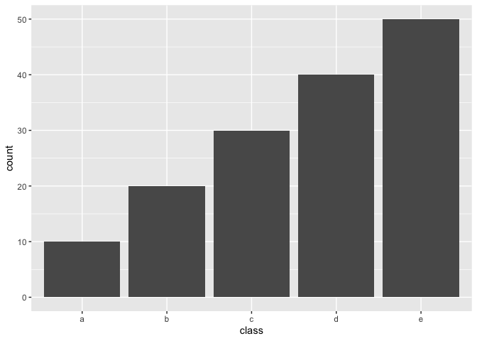
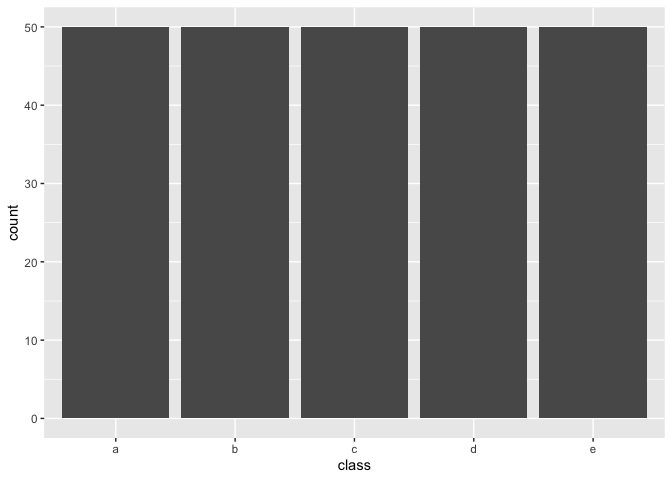
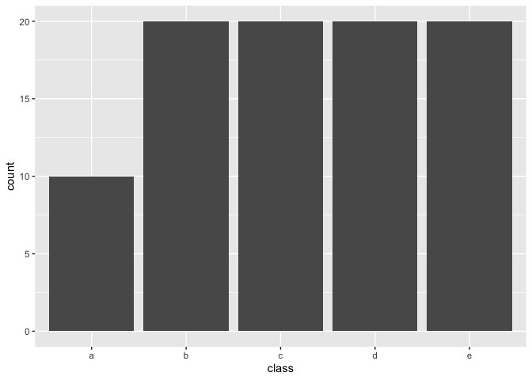

themis contains extra steps for the recipes package for dealing with unbalanced data. The name themis is that of the ancient Greek god who is typically depicted with a balance.

Installation
You can install the released version of themis from CRAN with:
install.packages("themis")Install the development version from GitHub with:
require("devtools")
install_github("tidymodels/themis")Example
Following is a example of using the SMOTE algorithm to deal with unbalanced data
library(recipes)
library(modeldata)
library(themis)
data(okc)
sort(table(okc$Class, useNA = "always"))
#>
#> <NA> stem other
#> 0 9539 50316
ds_rec <- recipe(Class ~ age + height, data = okc) %>%
step_impute_mean(all_predictors()) %>%
step_smote(Class) %>%
prep()
sort(table(bake(ds_rec, new_data = NULL)$Class, useNA = "always"))
#>
#> <NA> stem other
#> 0 50316 50316Methods
Below is some unbalanced data. Used for examples latter.
example_data <- data.frame(class = letters[rep(1:5, 1:5 * 10)],
x = rnorm(150))
library(ggplot2)
example_data %>%
ggplot(aes(class)) +
geom_bar()
Upsample / Over-sampling
The following methods all share the tuning parameter over_ratio, which is the ratio of the majority-to-minority frequencies.
| name | function | Multi-class |
|---|---|---|
| Random minority over-sampling with replacement | step_upsample() |
✔️ |
| Synthetic Minority Over-sampling Technique | step_smote() |
✔️ |
| Borderline SMOTE-1 | step_bsmote(method = 1) |
✔️ |
| Borderline SMOTE-2 | step_bsmote(method = 2) |
✔️ |
| Adaptive synthetic sampling approach for imbalanced learning | step_adasyn() |
✔️ |
| Generation of synthetic data by Randomly Over Sampling Examples | step_rose() |
By setting over_ratio = 1 you bring the number of samples of all minority classes equal to 100% of the majority class.
recipe(~., example_data) %>%
step_upsample(class, over_ratio = 1) %>%
prep() %>%
bake(new_data = NULL) %>%
ggplot(aes(class)) +
geom_bar()
and by setting over_ratio = 0.5 we upsample any minority class with less samples then 50% of the majority up to have 50% of the majority.
recipe(~., example_data) %>%
step_upsample(class, over_ratio = 0.5) %>%
prep() %>%
bake(new_data = NULL) %>%
ggplot(aes(class)) +
geom_bar()
Downsample / Under-sampling
Most of the the following methods all share the tuning parameter under_ratio, which is the ratio of the minority-to-majority frequencies.
| name | function | Multi-class | under_ratio |
|---|---|---|---|
| Random majority under-sampling with replacement | step_downsample() |
✔️ | ✔️ |
| NearMiss-1 | step_nearmiss() |
✔️ | ✔️ |
| Extraction of majority-minority Tomek links | step_tomek() |
By setting under_ratio = 1 you bring the number of samples of all majority classes equal to 100% of the minority class.
recipe(~., example_data) %>%
step_downsample(class, under_ratio = 1) %>%
prep() %>%
bake(new_data = NULL) %>%
ggplot(aes(class)) +
geom_bar()
and by setting under_ratio = 2 we downsample any majority class with more then 200% samples of the minority class down to have to 200% samples of the minority.
recipe(~., example_data) %>%
step_downsample(class, under_ratio = 2) %>%
prep() %>%
bake(new_data = NULL) %>%
ggplot(aes(class)) +
geom_bar()
Contributing
This project is released with a Contributor Code of Conduct. By contributing to this project, you agree to abide by its terms.
For questions and discussions about tidymodels packages, modeling, and machine learning, join us on RStudio Community.
If you think you have encountered a bug, please submit an issue.
Either way, learn how to create and share a reprex (a minimal, reproducible example), to clearly communicate about your code.
Check out further details on contributing guidelines for tidymodels packages and how to get help.